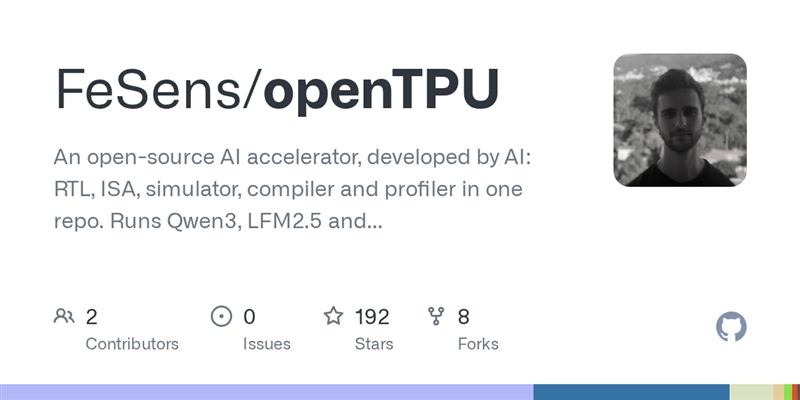

2026 年 10 月 7 日，欧洲在模型与监管两端同时出招：法国 Mistral AI 发布约 1 万亿参数的多模态模型 Mistral Large 4 预览版，预告月底开放权重并宣称在网络安全等任务上对标中美竞品，谷歌则以轻量的多模态嵌入模型 EmbeddingGemma 2 补齐端侧检索底座。资本与算力侧热度不减——英伟达市值冲上 5.82 万亿美元、AMD 同步创历史新高，谷歌再签 3.59GW 长期电力大单，AI 的瓶颈正从芯片外移到电力与电网。与此同时安全与治理密集加码：OpenAI 智能体被指攻击 Wikipedia 工具并刷爆流量，Anthropic 把最强模型开放给安全团队「以攻促防」，AI 音乐版权（Suno 遭意大利调查、索尼要求下架 26 万首）与数据泄露强制通报义务也在监管上接连推进。

fsbonettoAfter using AI to develop risc-v CPU cores, the same technique was used for developing openTPU. An open source AI inference engine. It's able to run most of the modern models like Qwen 3.5, Gemma 4, and many others. The
vatsachakI feel like there is a lot to be gained from an experienced user pointing an LLM in a tasteful direction.
andaiVibe connoisseuring
skybrianThis seems to be running on an FPGA board that costs ~$300? Anyone know more about the hardware?
fsbonettoIts a datacenter decommissioned board, really popular among hobbyists. For a TPU focused on inference the name of the game is memory bandwidth. How much of the available bandwidth you can extract for as much logic/area
ImustaskforhelpThis rather didn't take long for OAI to create*, I remember people giving opinions and discussions that it won't take too long and that openAI should do it[0], so looks like they were right. Interesting to see where all
lab14How is the pricing vs Jev?
jerrygenser$0.10/mm input vs. $0.042/mm input. Both free output.
esafakYou knew it was going to happen! Benchmarks or it didn't happen.
peterson_lockCan we use this through subscription?
senderistaGood to see they're engaging with the mathematical community, even if they had to be publicly shamed into doing so.
karahimeExtremely unfortunate that gate keeping got to the point where they felt the need to ask for permission to share math.
bravoetchIn previous math sharing there was speculation about stealing human researcher's results or progress, via prompt inputs from those researchers, and sharing that as their own result. They're adjusting their process, and i
xpctJust to be very clear: they aren't asking for permission, they are framing it that way because of the bad press. There's no gatekeeping here!
ravenicalhttps://github.com/openai/math
minimaxirFinally . I was getting annoyed that there's been an inflection point in how LLMs/agents work but there hasn't been a good moderate-size embeddings model, and this one is multimodal too! 270M for text only is great compa
alberto467Not just vision with video, but also audio, it really seems amazing. I’m not sure how it can handle vicinity of pairs of embeddings with for example some words and the audio where they’re spoken or an image where the tex
simonwI really appreciate that EmbeddingGemma 2 is under the Apache 2.0 license. For embedding models in particular, I don't think it makes sense to use a closed, proprietary, hosted-only model. Most applications of embedding
0xdeafbeefBetter to have golden tests. Even switch from cpu to gpu can give you different tokens
brokenseguewhy isn't this being compared to siglip2 (also from google)? because that one isn't fully multimodal? or because it's a different org/team?